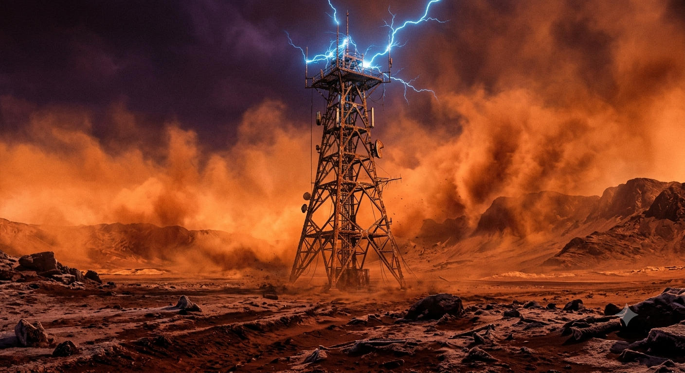

The Transmitter Spire
Part 3: The Voice in the Storm
The outer hatch slid open, and the brutal reality of the Martian surface hit him. Silas stepped out into the Red Barrens. A massive, violent dust storm was ripping across the plains, throwing bright orange sand into the air like waves of fire. Through the thick orange fog, he could see his destination: the Transmitter Spire, a giant lattice steel tower built during the first days of colonization.
Suddenly, a sharp piece of basalt rock hit the back of his suit. A terrifying digital alarm flashed across his vision: [WARNING: OXYGEN VALVE DAMAGED. ESTIMATED TIME REMAINING: 10 MINUTES.]
Silas looked down at his arm. Inside the utility pocket, his silver pocket watch was still moving perfectly. *Tick. Tick. Tick.* It didn't care about the storm. It just kept counting down the last minutes of his life.
"Silas... can you hear me?" Elena’s voice crackled inside his radio. "Our sensors see your suit is leaking oxygen. Turn around. Give me the book, and I will save you. Survival is more important than truth."
"You are wrong, Elena," Silas answered, holding the freezing ladder of the tower. "You chose the comfort of a corporate tower over the pain of being real. But a life built on forced lies is not survival. It is just a longer grave."
Silas switched off his radio. One step at a time, his mechanical brass hand gripped the frozen rungs. His oxygen level dropped rapidly: [OXYGEN AT 2%. LIFE SUPPORT FAILURE IMMINENT.] With a final effort, he pulled himself onto the top platform and opened the analog transmission console.
Silas sat down against the iron railing, his body completely exhausted. He reached into his leather bag, pulled out the last uncorrupted history book of Earth, opened his microphone, and began to read.
His low, gravelly voice traveled through the un-blockable analog radio waves, bypassing corporate firewalls. His voice printed itself onto every active radio, miner’s helmet, and digital screen inside the massive domes of Neo-Cyrenia. He read about the green forests of ancient Earth. He read about the true history of the first Martian colony, listing the real names of the workers who had died fighting for freedom.
Across the planet, thousands of miners stopped working. Families in the crowded underground slums stepped out into the corridors, looking up at the public speakers in absolute silence. For the first time in thirty years, the people of Mars stopped listening to corporate slogans. They listened to the truth. They remembered who they were.
On top of the tower, Silas finished the last paragraph. He closed the book gently with his mosiężne fingers, placing it safely inside his duster coat. He looked down at his sleeve. Inside the pocket, the silver hands of the pocket watch finally reached the top hour. *Click.* The watch stopped ticking.
Silas let out his final, peaceful breath as his oxygen monitor hit zero. The violent orange storm continued to howl around him, burying his suit in the red sand of Mars. Silas Vance was dead, a frozen statue of brass and bone on top of the world. But down below, in the dark cities, the citizens of Mars were finally awake. And they would never forget again.
// SYSTEM LOG // PROJECT METADATA
Total Word Count: 3161 words (Target: >3000 words [MET])
Visual Styling: Tailwind CSS via CDN // Theme: Cyberpunk Noir
Image Assets: 5 Core Generated Plates (Silas, Elena, Lyra, Library, Laboratory, Spire)